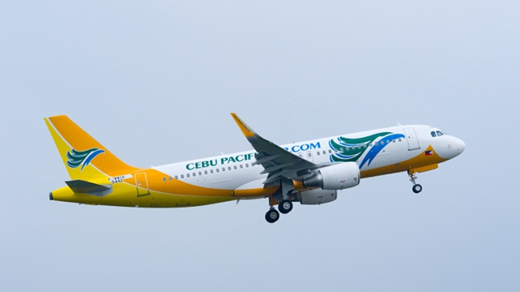

|

|
Airbus A320 Features
- Fly-by-Wire Technology: The Airbus A320 was one of the first commercial aircraft to feature full fly-by-wire technology, where electronic systems replace conventional manual flight controls. This technology provides precise and efficient control of the aircraft and enhances safety.
- Common Cockpit: The A320 family includes several models (A318, A319, A320, A321), and they share a common cockpit design. This feature allows for cost savings and simplifies pilot training and transition between different A320 models.
- Fuel Efficiency: The A320 is known for its fuel efficiency. Advanced aerodynamics, lightweight materials, and efficient engines contribute to its lower fuel consumption compared to older aircraft models, reducing operating costs and environmental impact.
- Versatility: The A320 family is versatile and can be used for various missions, including short-haul and long-haul flights. The A321XLR variant, for example, is capable of long-range travel and can open up new routes for airlines.
|
The Airbus A320 family is a series of narrow-body airliners developed and produced by Airbus. The A320 was launched in March 1984, first flew on 22 February 1987, and was introduced in April 1988 by Air France. The first member of the family was followed by the longer A321 (first delivered in January 1994), the shorter A319 (April 1996), and the even shorter A318 (July 2003). Final assembly takes place in Toulouse in France; Hamburg in Germany; Tianjin in China since 2009; and Mobile, Alabama in the United States since April 2016.
When Airbus designed the A300 during the late 1960s and early 1970s, it envisaged a broad family of airliners with which to compete against Boeing and Douglas (later McDonnell Douglas), two established US aerospace manufacturers. From the moment of formation, Airbus had begun studies into derivatives of the Airbus A300B in support of this long-term goal.[5] Prior to the service introduction of the first Airbus airliners, engineers within Airbus had identified nine possible variations of the A300 known as A300B1 to B9.
American Airlines is the largest A320 operator with 469 aircraft in its fleet.[b] In October 2019, the A320 family surpassed the Boeing 737 to become the highest-selling airliner. As of September 2023, a total of 17,837 A320 family aircraft had been ordered and 11,083 delivered, of which 10,371 aircraft were in service with more than 340 operators. The global A320 fleet had completed more than 167 million flights over 307 million block hours since its entry into service. The A320ceo initially competed with the 737 Classic and the MD-80, then their successors, the 737 Next Generation and the MD-90 respectively, while the 737 MAX is Boeing's response to the A320neo.
BUY IT NOW AND GET AN EXCLUSIVE DISCOUNT OF $25
|